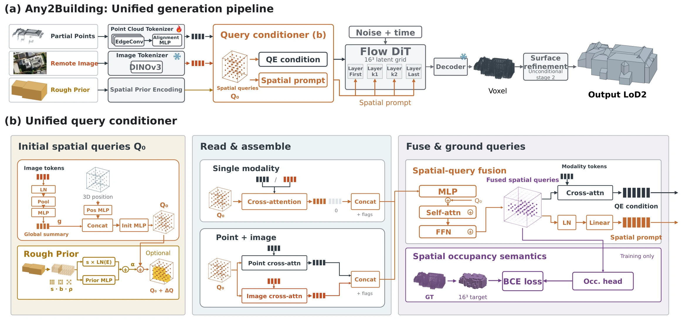
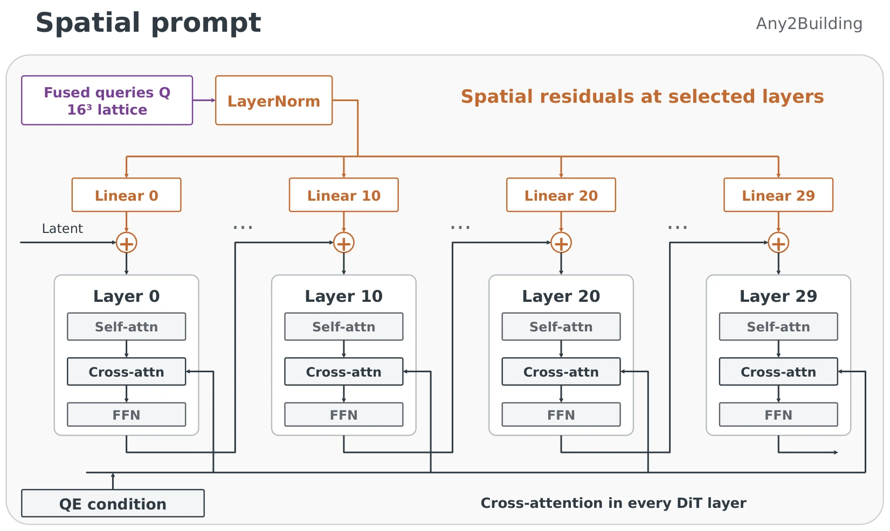

NEW
National Champion · Grand Prize
LoD2 Building Reconstruction Track
National LiDAR Point Cloud Conference
全国激光雷达点云大会 LoD2 Building 重建赛道
全国冠军 · 特等奖
MULTIMODAL BUILDING RECONSTRUCTION
AI4City Lab · The Hong Kong University of Science and Technology (Guangzhou)
One model for points, images, and both.

MILESTONES
NEW
LoD2 Building Reconstruction Track
National LiDAR Point Cloud Conference
全国激光雷达点云大会 LoD2 Building 重建赛道
全国冠军 · 特等奖
BuildingWorld Workshop
BuildingWorld Workshop · 亚军
THE IDEA
Point clouds offer explicit geometry. Images offer rich visual cues. Any2Building brings these complementary observations into a common 3D reference through shared spatial queries.
Point and image features are read into a shared query lattice, supervised by occupancy, and used to guide building generation. The same framework supports point clouds, single images, and their combinations.
HOW IT WORKS
A common 3D interface between observations and the generative model.


An EdgeConv point tokenizer and a frozen DINOv3 image encoder extract features from the available input.
A 16 × 16 × 16 lattice of shared queries organizes the features in space, with occupancy supervision.
The conditioned structure model predicts occupancy. A separate surface model produces geometry, with optional low-poly remeshing.
REPORTED IN THE MANUSCRIPT
F-score at 2% for the final low-poly results, under each table's evaluation protocol.
97.19%
Table 2(a)
77.41%
Table 2(b) · sparse points
62.82%
Table 3(a)
78.64%
Table 3(b)
The input settings differ between protocols; these values are not a comparison of modalities under identical observations.
RESEARCH CODE
Training and inference code, dependencies, and six small input examples.
The repository includes three point-cloud inputs and three single-image inputs. Pretrained models are available on Hugging Face.
The Any2Building implementation lives in any2building/. Adapted TRELLIS.2 components and other dependencies are identified separately in the third-party notices.
git clone https://github.com/HenryHoou/Any2Building.git
cd Any2Building
# Follow the README to install dependencies
# and download the pretrained models from Hugging Face.
python infer.py --examples \
--outdir outputs/examplesSee the README for the complete setup and checkpoint paths.
LICENSE & COMMERCIAL USE
Original Any2Building code is provided under the AI4City Technology License v1.0, following the lab's BuildAnyPoint licensing policy. Non-commercial academic research and internal evaluation are permitted under its terms.
Commercial use requires prior written authorization. For commercial licensing and collaboration, contact wufanzhao@hkust-gz.edu.cn.
本项目遵循 AI4City 实验室授权条款。商业使用须事先取得书面授权；商业授权与合作请联系上述邮箱。
Third-party components retain their respective licenses. Any2Building's license does not override those terms.
REFERENCE
@misc{any2building2026,
title = {Any2Building: Unifying Point Clouds and Images for
Building Reconstruction via Shared Spatial Queries},
author = {Hongye Hou and others},
year = {2026},
note = {Manuscript},
url = {https://henryhoou.github.io/Any2Building/}
}